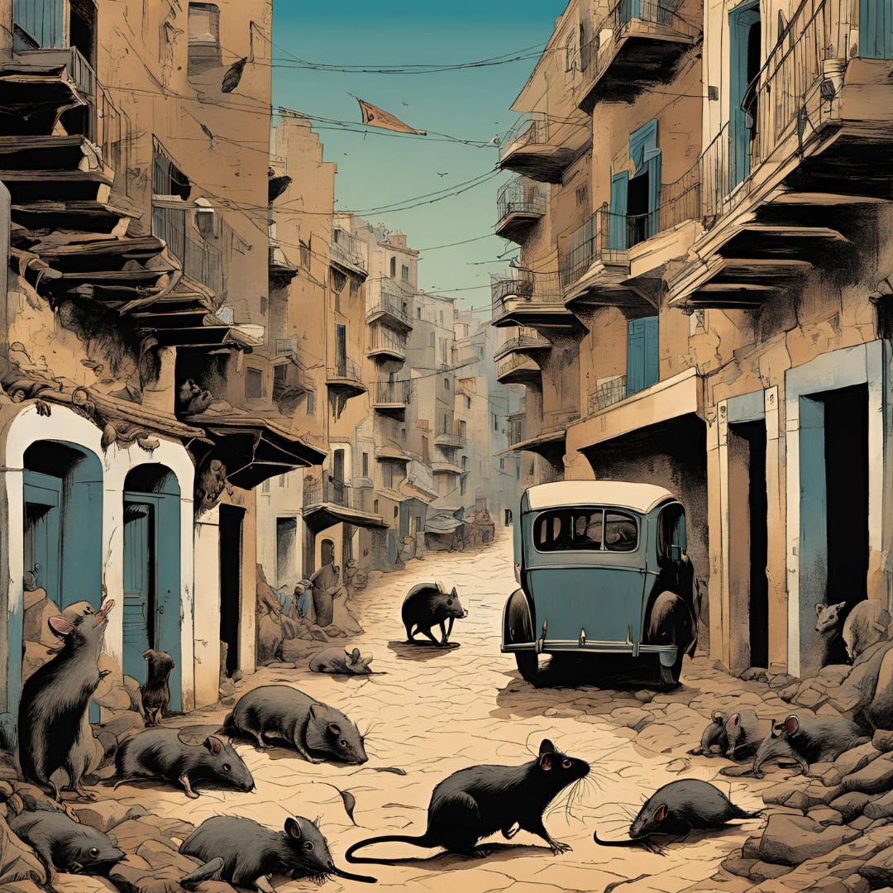

작가
알베르 카뮈
출판일
1947년
감상평에 대한 AI그림
페스트는 인간 존재의 무의미와 삶의 부조리를 탐구하는 작품입니다. 주인공들과 마을 사람들이 극복해 나가는 고통과 희망을 통해 삶의 의미를 묻는 깊은 철학적 메시지가 담겨 있습니다. 카뮈는 인간의 삶과 죽음을 진지하게 성찰하면서도, 절망 속에서 발견되는 연대와 용기를 그려냅니다.

감상평에 대한 AI 감정 평가
~~~~AI평가~~~~~
✨ ~~~~AI평가~~~~~
✨ ~~~~AI평가~~~~~
✨ ~~~~AI평가~~~~~